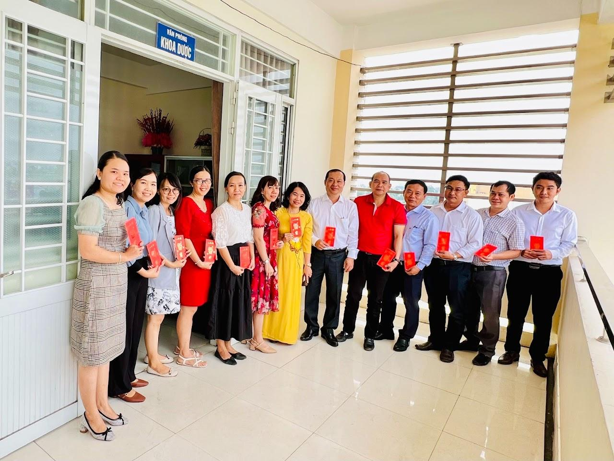
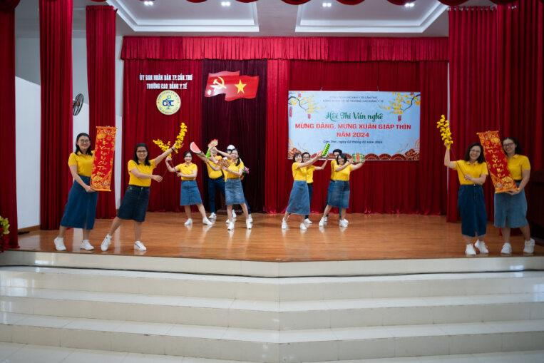
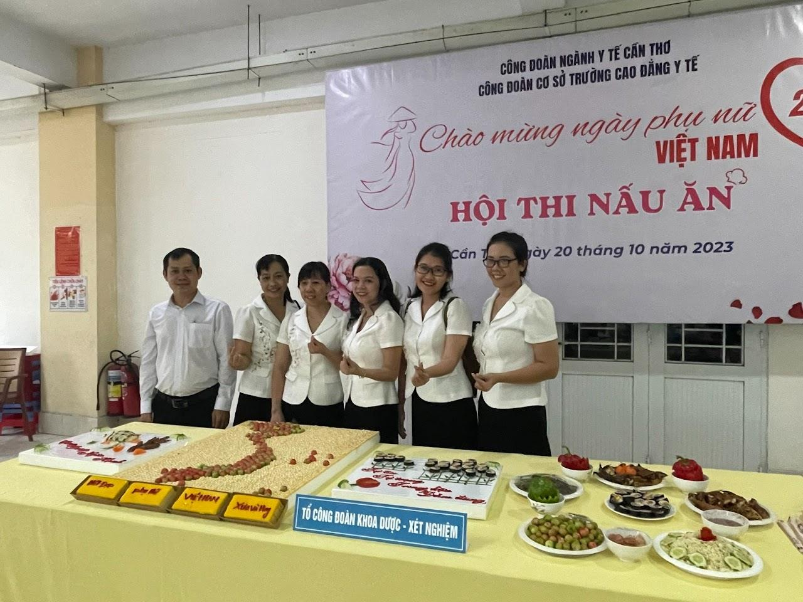
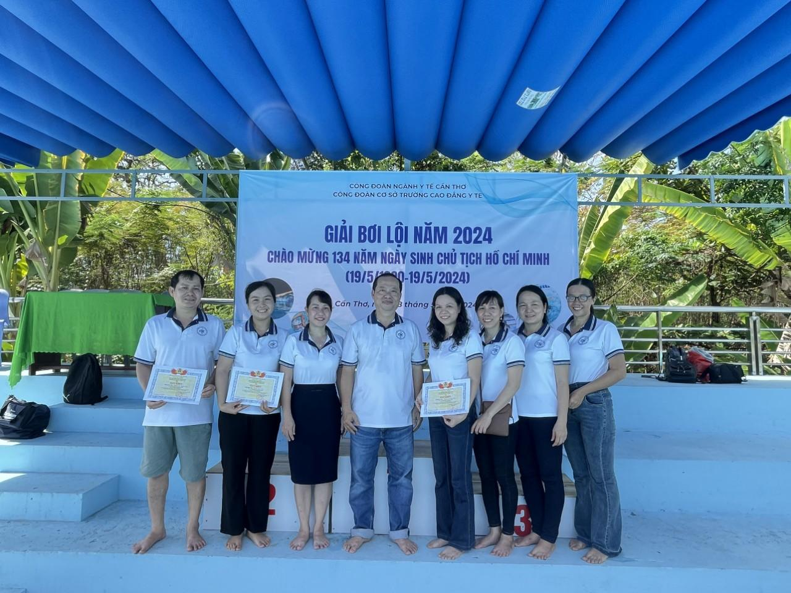
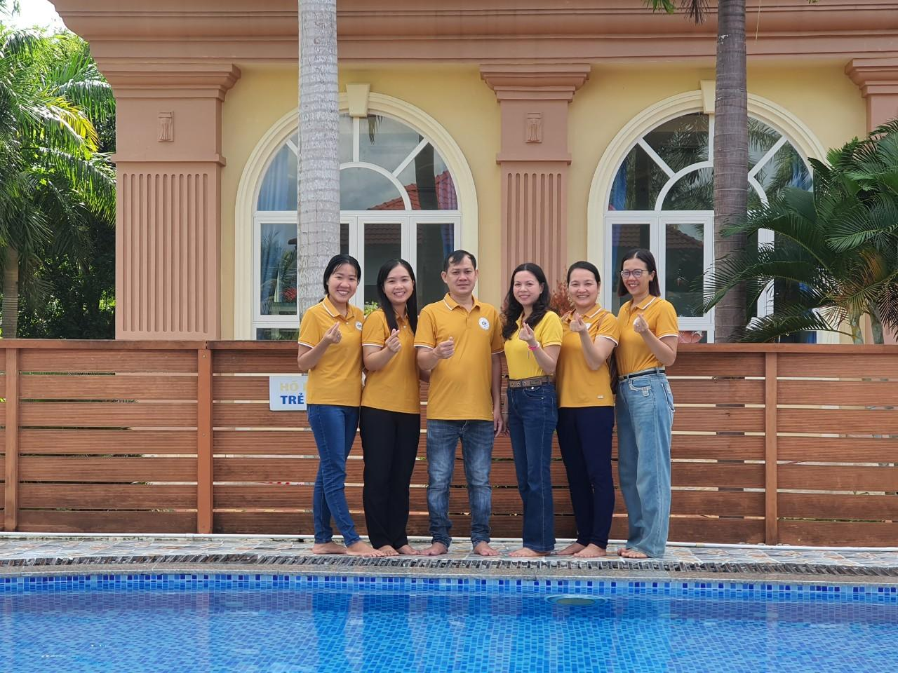
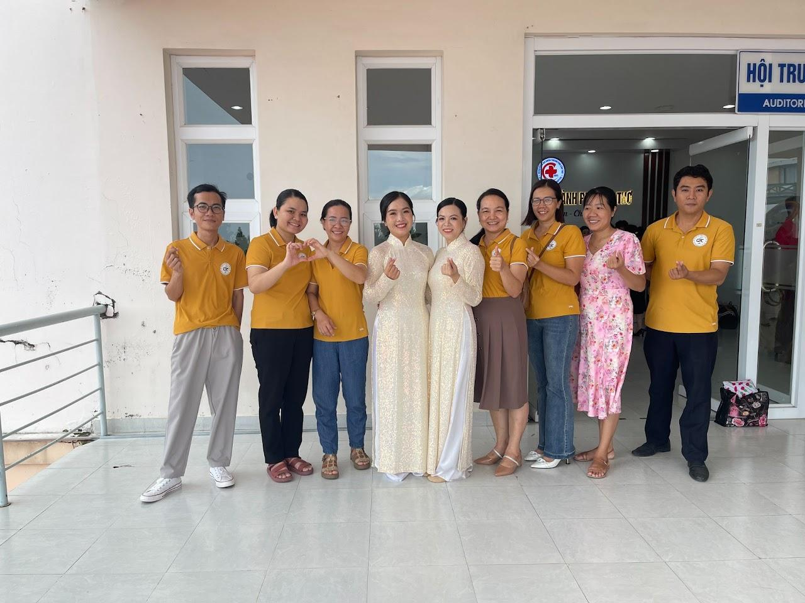
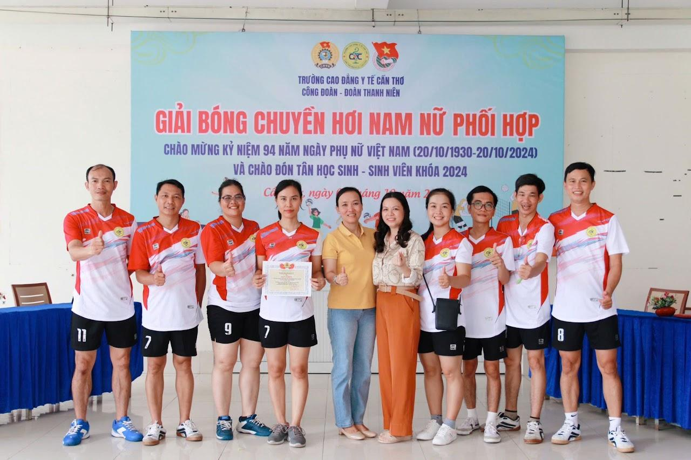
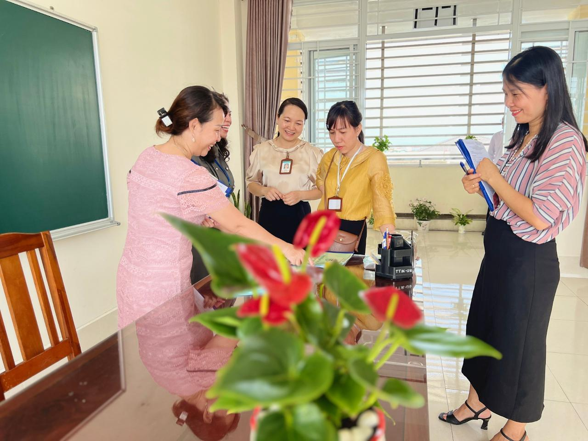

GIỚI THIỆU TỔ CÔNG ĐOÀN KHOA DƯỢC - XÉT NGHIỆM
Tổ công đoàn khoa Dược - Xét nghiệm là một tổ chức vững mạnh gồm 20 công đoàn viên trong đó có 15 công đoàn viên nữ và 5 công đoàn viên nam. Trong những năm qua, được sự quan tâm, chỉ đạo, giúp đỡ và hỗ trợ kịp thời từ Ban giám hiệu Nhà trường, Ban chấp hành Công đoàn Trường, lãnh đạo các đơn vị; công đoàn khoa Dược - Xét nghiệm luôn phát huy tốt vai trò bảo vệ quyền và lợi ích hợp pháp của người lao động. Phối hợp với Khoa, bộ môn thực hiện có hiệu quả những nhiệm vụ chính trị của đơn vị. Thực hiện tốt các cuộc vận động, các phong trào thi đua do ngành và địa phương phát động. Tích cực tham gia các hoạt động ủng hộ, công tác từ thiện, giúp đỡ đoàn viên công đoàn có hoàn cảnh khó khăn…
MỘT SỐ HOẠT ĐỘNG TIÊU BIỂU CỦA TỔ CÔNG ĐOÀN KHOA

Họp mặt đầu năm của khoa Dược - Xét nghiệm

Tổ CĐ khoa Dược - Xét nghiệm tham gia hội thi văn nghê mừng Đảng - mừng xuân Giáp Thìn

Tổ công đoàn khoa Dược - Xét nghiệm tham gia hội thi nấu ăn chào mừng ngày phụ nữ Việt Nam 20-10

Tổ công đoàn khoa Dược - XN tham gia cuộc thi bơi lội cấp Trường

Tổ công đoàn khoa Dược - Xét nghiệm tham gia cuộc thi bơi lội khối thi đua các trường Cao đẳng - Đại học

Tổ công đoàn khoa Dược - Xét nghiệm tham gia cuộc thi múa công đoàn ngành Y tế

Tổ công đoàn khoa Dược - Xét nghiệm tham gia cuộc thi bóng chuyền hơi cấp Trường

Tổ công đoàn khoa Dược - Xét nghiệm tham gia cuộc thi xanh - sạch - đẹp